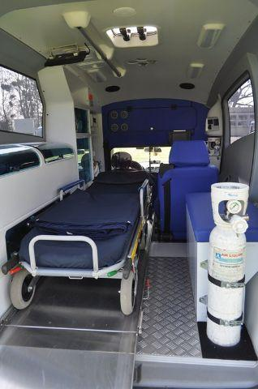
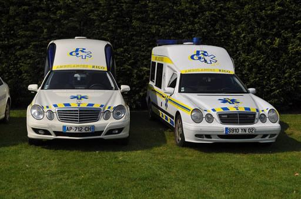
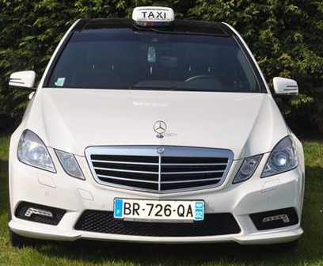
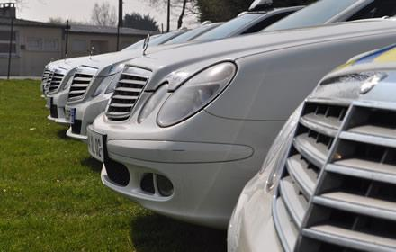

Ambulance
Brancard, oxygène et équipement à bord : vous voyagez allongé ou sous surveillance, accompagné par notre équipage.
Sains-Richaumont · Aisne (02)
Ambulances et taxis Rigo vous conduisent à vos rendez-vous médicaux, à l'hôpital ou en clinique, allongé ou assis selon votre prescription. Nos clients nous font confiance dans tout le département.
En cas d'urgence vitale, appelez le 15.

Le type de transport est indiqué par votre médecin sur la prescription médicale de transport. Pensez à la prendre avec vous.

Brancard, oxygène et équipement à bord : vous voyagez allongé ou sous surveillance, accompagné par notre équipage.
Le véhicule sanitaire léger vous conduit assis à vos consultations, examens et séances de soins, puis vous ramène chez vous.

Nos taxis vous emmènent à vos rendez-vous, médicaux ou non, depuis Sains-Richaumont.
Laissez votre nom et votre numéro : nous vous rappelons pour organiser votre transport. En cas d'urgence vitale, appelez le 15.

Nous sélectionnons nos ambulanciers pour leurs compétences professionnelles et leur capacité d'adaptation, puis nous veillons à leur formation.
Nous partons de Sains-Richaumont pour vos trajets vers Guise, Marle, Vervins et l'ensemble du département.
Schéma indicatif, Aisne (02)
Appelez-nous pour réserver un transport ou poser une question. Pour une urgence vitale, composez le 15.